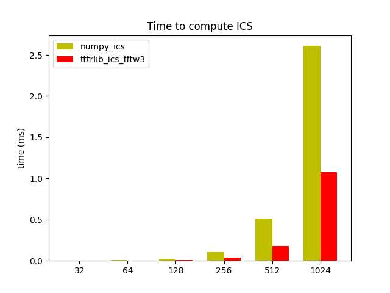

Note
Click here to download the full example code
Image correlation spectroscopy - benchmark¶

import tttrlib
import numpy as np
import scipy.stats
import pylab as p
import timeit
def numpy_fft_ics(
images: np.ndarray,
subtract_average
):
if subtract_average:
images = images - images.mean(axis=0) + images.mean()
ics_list = list()
_, nx, ny = images.shape
N = nx * ny
for im in images:
img_flucc = im - im.mean()
f = np.fft.fft2(img_flucc)
ics = np.fft.ifft2(f*np.conj(f)).real / (np.mean(im)**2 * N)
ics_list.append(ics)
return np.array(ics_list)
def make_image_stack(
nx: int = 256,
ny: int = 256,
n_gaussians: int = 50,
shift_vector: np.array = None,
n_frames: int = 10,
covariance: list = None
):
"""Computes for reference a set of randomly place Gaussians on a stack of
images that move from frame to frame as specified by a displacement vector
:param nx: number of pixels in x
:param ny: number of pixels in y
:param n_gaussians: number of gaussians
:param shift_vector: the vector that shifts the gaussians from frame to frame
:param n_frames: the number of frames
:param covariance: the covariance matrix of the gaussians
:return: numpy array containing a stack of frames
"""
if shift_vector is None:
shift_vector = np.array([0.2, 0.2], np.float)
if covariance is None:
covariance = [[1, 0], [0, 1]]
stack = list()
gaussians = list()
for i in range(n_gaussians):
gaussians.append(
(np.random.randint(0, nx), np.random.randint(0, ny))
)
for i_frame in range(n_frames):
x, y = np.mgrid[0:nx:1, 0:ny:1]
pos = np.dstack((x, y))
img = np.zeros((nx, ny), dtype=np.float64)
for i in range(n_gaussians):
x_mean, y_mean = gaussians[i]
x_pos = x_mean + shift_vector[0] * i_frame
y_pos = y_mean + shift_vector[1] * i_frame
rv = scipy.stats.multivariate_normal([x_pos, y_pos], covariance)
img += rv.pdf(pos)
stack.append(img)
return np.array(stack)
# Benchmark
n_test_runs = 3
n_frames = 10
n_gaussians = 20
array_sizes = [32, 64, 128, 256, 512, 1024]
time_numpy_ics = list()
time_tttrlib_ics_fftw3 = list()
for array_size in array_sizes:
img = make_image_stack(
nx=array_size,
ny=array_size,
n_gaussians=n_gaussians,
shift_vector=[0.5, 0.5],
n_frames=n_frames,
covariance=[[1.0, 0], [0, 8.0]]
)
time_numpy_ics.append(
timeit.timeit(
'numpy_fft_ics(images=img, subtract_average=True)',
number=n_test_runs,
setup='from __main__ import numpy_fft_ics, img'
)
)
time_tttrlib_ics_fftw3.append(
timeit.timeit(
'tttrlib.CLSMImage.compute_ics(images=img, subtract_average="stack")',
number=n_test_runs,
setup='from __main__ import tttrlib, img'
)
)
labels = list(str(x) for x in array_sizes)
N = len(labels)
width = 0.35
ind = np.arange(N) # the x locations for the groups
fig, ax = p.subplots()
ax.set_ylabel('time (ms)')
ax.set_title('Time to compute ICS')
ax.set_xticks(ind + width / 2)
ax.set_xticklabels(labels)
rects1 = ax.bar(ind, time_numpy_ics, width, color='y')
rects2 = ax.bar(ind + width, time_tttrlib_ics_fftw3, width, color='r')
ax.legend(
(rects1[0], rects2[1]),
('numpy_ics', 'tttrlib_ics_fftw3')
)
p.show()
Total running time of the script: ( 0 minutes 38.115 seconds)